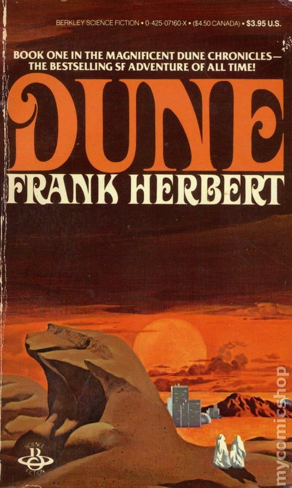
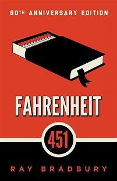

Dont read as much as I used to so this list more of what I liked a few years back in highschool when I actually had time to read. Anyways
Bone #1 by Jeff Smith This graphic novel introduces the Bone cousins—Fone Bone, Phoney Bone, and Smiley Bone—as they’re run out of their hometown and stumble into a mysterious valley. Combining whimsical humor with epic fantasy elements, Bone begins as a lighthearted adventure that slowly reveals deeper, darker storylines.
Berserk Vol. 1 by Kentaro Miura A dark fantasy manga following Guts, a lone mercenary with a tragic past and a massive sword. Set in a brutal medieval world, Guts battles demonic forces and corrupt humans alike. The story dives deep into themes of fate, vengeance, and survival, all wrapped in intense action and psychological drama.
Go Set a Watchman by Harper Lee Set two decades after To Kill a Mockingbird, this novel follows Jean Louise “Scout” Finch as she returns to her hometown of Maycomb, Alabama. Now an adult, she grapples with personal beliefs and disillusionment as she discovers troubling truths about her father, Atticus Finch. The story explores themes of identity, race, and moral complexity during the early Civil Rights era. Though controversial for its portrayal of beloved characters, Go Set a Watchman offers a thought-provoking look at growing up and reconciling ideals with reality.
Dune by Frank Herbert Set in a distant future where noble houses vie for control of planets, Dune follows Paul Atreides, a young heir whose family is betrayed after taking stewardship of the desert planet Arrakis. The planet is the only source of “melange,” a powerful spice critical to space travel. As Paul navigates political intrigue, prophecy, and rebellion, he becomes entwined with the native Fremen and his destiny as a potential messiah. Blending science fiction with ecology, religion, and power dynamics, Dune is a rich, epic tale of survival and transformation in a harsh, unforgiving world.
The Great Gatsby by F. Scott Fitzgerald Set in the Roaring Twenties, The Great Gatsby tells the story of Jay Gatsby, a mysterious millionaire known for his lavish parties and undying love for Daisy Buchanan. Narrated by Nick Carraway, Gatsby’s neighbor and Daisy’s cousin, the novel explores themes of wealth, illusion, love, and the American Dream. As Gatsby tries to recapture a lost past, the glittering facade of high society begins to crack, revealing emptiness beneath. With lyrical prose and sharp social commentary, Fitzgerald paints a haunting portrait of ambition and longing in Jazz Age America.
Fahrenheit 451 by Ray Bradbury In a dystopian future where books are banned and “firemen” burn them, Guy Montag begins to question the society he once served. As a fireman, his job is to destroy knowledge, but encounters with a curious young woman and a group of secret readers ignite a transformation in him. Fahrenheit 451 explores themes of censorship, conformity, and the power of knowledge in a world numbed by mass media and shallow entertainment. Bradbury’s classic is a chilling warning about losing critical thought and the consequences of a controlled, unthinking society.
These books have stuck with me over the years for their bold ideas, unforgettable characters, and the way they challenged me to think differently. Whether it’s the dark fantasy of Berserk, the political depth of Dune, or the emotional resonance of The Great Gatsby, each one brought something unique to the table. This list reflects the stories that left the biggest impact on me during a time when reading was a daily escape.